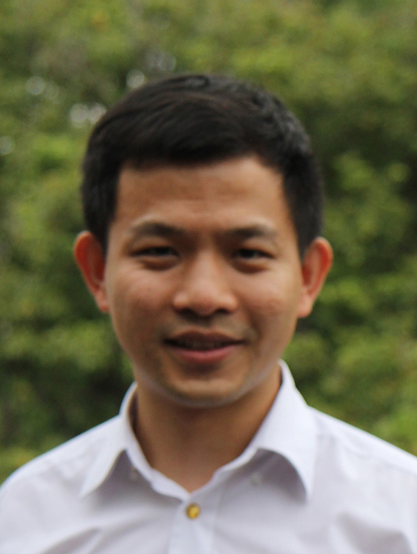
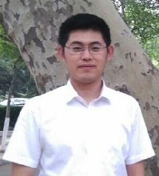

Statistical Genetics and Population Genetics
Chaolong Wang, Principal Investigator.
Chaolong completed his B.S. in Physics at Peking University in China in 2008. He went to graduate school at the University
of Michigan, Ann Arbor, where he received his M.A. in Statistics (2011), as well as M.S. and Ph.D. in Bioinformatics (2012).
His Ph.D. research focused on population genetics, mentored by Dr. Noah Rosenberg.
From 2012 to 2014, Chaolong was a Research Fellow at Harvard University, where he studied statistical genetics under
Dr. Xihong Lin and also worked
closely with Dr. Gonçalo Abecasis at the University of Michigan.
Chaolong joined the Genome Institute of Singapore on January, 2015. |
 |
Jinzhuang Dou, Postdoctoral Fellow. Jinzhuang received his Ph.D. in Bioinformatics from the Ocean University of China (2015), where he focused on developing bioinformatics tools for marine genomics analysis. Prior to his Ph.D., he received both B.S. in Mathematics (2009) and M.S. in Optimization and Automatic Control Theory (2012) from the Ocean University of China. Jinzhuang joined our lab on June, 2015. |
 |
Sonia Chothani, Data Analyst. Sonia received her B.Tech. in Biotechnology (2012) from the Indian Institute of Technology, Madras, India. Later, she went to Carnegie Mellon University in the USA, where she received her M.S. in Computational Biology (2013). Prior to her journey back to Asia, she was an Associate Research Engineer at Philips Research, Briarcliff Manor, NY. She joined us and Dr. Jianjun Liu's lab on May, 2015. |
Positions available: We are looking for motivated researchers to join the lab at research scientist, postdoctoral fellow, research assistant, and graduate student levels. Click here for more information. |
{kind=link}